Operating Documentation
Direction 5193574-800, Rev# 22
LightSpeed 7.X Service Methods
Module Version 11.0, Version Date 4/21/09
Operating Documentation |
| Last Revised: | 24 February 2009 |
This Load from Cold (LFC) procedure only supports systems using this version of 07MW18.4. or upgrading from versions 06MW03.4 and 06MW29.7. (See Illustration 1 for example console.)
For a description of the procedural flow of this document, see Table 1.
5212704 - LightSpeed Xtream Console Operating System
Version - GEMS Linux 6.2.9 OS
5212589- LightSpeed VCT Applications Software DVD
Version 07MW18.4
5212235 - Xtream Serial-Over-LAN Service Software
Supports: Linux Xtream: Jarrell/Westville hardware and OS versions: 4.3.16 and 6.2.9
HP xw8200 BIOS Floppy Set - 5191796-3
- 5191796 BIOS 2.10 Floppy
- 5191796-2 BIOS 2.10 Configuration Floppy
| NOTE: | The Xtream Serial-Over-LAN Service Software is not used during the LFC unless instructed via a pop-up message box. This CD is loaded directly into the VDARC Node. Then press the reset (or cycle power) at the front panel of the VDARC Node as required. This CD will auto-eject when the SOL load process is complete. |
| NOTE: | The information in this section is NOT saved to System State. |
If you choose, you may start the Save System State process (Table 2) at this time.
Verify and record specific system information in Section 1 of the 07MW18.4 VCT Console Information Sheet.
With Application Software up, record the [User Prefs] Screen and Film Large Font Annotation Groups selections. Refer to Section 13 to understand the information that may need to be gathered.
Select Autovoice Volume (Toolchest, upper right corner) and record the Left Value and Right Value settings. The path to view the all audio settings is as follows: {ctuser@hostname} audioSetting (PCM2 info is the left and right value as described above).
Record DICOM information as required in Section 3 of the 07MW18.4 VCT Console Information Sheet
Open a Unix Shell and type:{ctuser@hostname} installOptions
Check the box on the Information Sheet next to each Option currently loaded on the system in Section 1.
If Exam Split is present, perform the following to determine ves or hes.
{ctuser@hostname} su -
Password:<password>
| NOTE: | If the Password has not been modified by the site and is not known, the correct course of action is to contact Local GE Service. |
{root@hostname} ls -l ~ctuser/ves/.hesMode
| NOTE: | There are no spaces in the phrase ~ctuser/ves/.hesMode. |
Examine the results. If the results are similar to:
-rw-r--r-- 1 ctuser users 0 Apr 3 12:43 /usr/g/ctuser/ves/.hesMode
then HES (Hard Exam Split) mode is configured.
If the results show “No such file or directory,” then VES (Virtual Exam Split) mode is configured. Record Exam Split Mode (Hard or Virtual). This info will be used during the LFC Options Installation.
If you have the ConnectPro option and use PPS, perform the following (refer to example):
{ctuser@hostname} cd /usr/g/ctuser/resources/pps
{ctuser@hostname} head -12 ppsserver.cfg
Output Example:
PPS_REMOTE_AE_LIST =
{
# AppTitle,IPAddress,IPPortNo,HostName;
DICOM_TEST_RMT,3.70.204.86,4500,Default;
Record the PPS Information per the following EXAMPLE:
| # AppTitle | IPAddress | IPPortNo | HostName |
| DICOM_TEST_RMT | 3.70.204.86 | 4500 | Default |
Record the AppTitle
Record the IPAddress
Record the IPPortNo
Record the HostNameRecord
| NOTE: | The information in this section IS SAVED to System State. It is up to the user to decide if the information gathered in this section is needed. The information may be gathered electronically and placed onto media (floppy, CD, flash drive). |
Service Note 06080312 for the SCSI Tower termination jumper must have been completed. If this has not been completed, the user may fail the Save/Restore System State process on older SCSI Towers.
Visually verify that the SCSI Tower DVD-RAM power is applied.
If applicable, verify that the SCSI Tower terminator LED is lit (located at the rear).
If a DASM is used on the system, verify that it is connected.
Verify that the Host Computer DVD-ROM and floppy drive do not have any media on them.
Record additional information in Section 2 of 07MW18.4 VCT Console Information Sheet.
Verify that the ICOM has its power LED lit. (See Illustration 2.)
Record the Tube Information in Section 4 of 07MW18.4 VCT Console Information Sheet. When multiple files exist, record information for a minimum of two years.
(For 06MW03.X and 06MW29.7 Software) Open the Service icon. Select [Error Logs] and then [Tube Usage]. Select [Details] and record the following as required for each tube file applicable to the two-year rule on the Console Information Sheet:
Tube serial no.
Installed on
Last scan on
Exam Usage Total (patient and non-patient)
Select [Back] for next tube as required.
Close the Tube Usage window when information gathering is complete.
(For 07MW18.4 Software) Open the Service icon. Select [Error Logs] and then [Tube Usage]. Select [Details] and record the following as required for each tube file applicable to the two-year rule on the Console Information Sheet:
Tube serial no.
Installed on
Last scan on
Exam Usage Total (patient and non-patient)
Click on [Advanced metric] reporting for next tube as required.
Tube mA Seconds (patient and non-patient)
Scan Seconds (patient and non-patient)
Select [Back] for next tube as required.
Close the Tube Usage window when information gathering is complete.
The system state backup saves vital calibration and scanner files. Follow the Save (Table 2) and Restore (Table 3) procedures throughout this document precisely or valuable information may be lost.
Whenever the Host Computer LFC is performed, the VDARC software must be loaded. This LFC document must be performed as written in its entirety when loading the Host to be successful.
| NOTE: | Before proceeding you must disconnect the console from the Hospital Network. Failure to do this may result in the console broadcasting traffic out to the entire Hospital network. |
Open a Unix Shell and become root:
{ctuser@hostname} su -
Password:<password>
| NOTE: | If the Password has not been modified by the site and is not known, the correct course of action is to contact Local GE Service. |
To determine the Host Computer BIOS version, type the following:
{root@hostname} dmidecode | grep Ver
Authorized BIOS versions
Version: JQ.W1.13US = 1.13 for xw8000
Version: 786B8 v2.10 = 2.10 for xw8200
Ensure that the Host Computer BIOS version is one of the two versions shown above. If correct, skip the following step. If not correct, perform Step 5.
If the Host BIOS version is not correct or if you suspect incorrect Host BIOS settings (changes specified by GE from default), follow the instructions for your specific Host type:
For HP xw8000, see PC BIOS Install & Setup for HP xw8000 Console. REQUIRED: Manually configure all BIOS settings at this time.
For HP xw8200, see PC BIOS Install & Setup for HP xw8200 Console. REQUIRED: The HP xw8200 has the ability to place the BIOS 2.10 Configuration Floppy into the Host and configure all BIOS settings without any manual entries. Load the BIOS 2.10 Configuration Floppy at this time.
| NOTE: | During the OS load you need to select [Ignore] twice when it complains about I/O errors with a SCSI device. These
messages will occur on systems with a DASM: Input/output error during read on /dev/sd? Input/output error during write on /dev/sd? |
Unplug the Hospital Network (HSP) cable from rear Console bulkhead. (See Illustration 3.)
Label the cable as HSP and set it aside during LFC.
Remove the Operator Console's front cover.
Ensure that the VDARC/VIG Troubleshooting Video Cable is not connected to the Scan or Display Monitors during the software load.
Insert the OS DVD into the tray on Host Computer DVD-ROM Drive.

| NOTE: | The Host Computer must be powered ON to insert the software media. |
Select one of the following methods to re-power the Operator Console:
If Applications are up, select the [Shutdown] icon on the Attention screen (Illustration 4), [Restart], then [OK].
If Application Software is down, at the toolchest open a Unix Shell and type:
{ctuser@hostname} halt
The Operator Console monitor will display a System halted message when it is acceptable to power OFF the Operator Console. (See Note.)
| NOTE: | (For 06MW03.X Software) Wait 1-2 minutes after the “System halted” message appears, to allow the VDARC Node to properly power-down. SW release 06MW29.7 and later has corrected this issue. |
Power OFF the Operator Console at the front panel switch. (See Illustration 5.)
Wait 30 seconds to allow all disk drives to settle; then power ON the Operator Console at the front panel switch.
As the Host Computer restarts, the booting process messages appear. After the booting process completes, the boot: prompt appears. (The OS is a bootable media.)
At the boot: prompt, type one of the following depending on system type:
(For English Keyboard only) GEHC2
(For International Command only) iGEHC2
| NOTE: | If a DASM is connected, select [Ignore] as required for IO errors. If the boot: prompt does not appear, then either the DVD is bad or the Console Operating System Media is not installed in the drive. Typing GEHC (or iGEHC) results in both scan and display being on one monitor and requires a LFC. Typing any other command not listed in this procedure will result in a LFC. |
After approximately 20 minutes, the OS is loaded on the Host Computer. A window appears.
Remove the OS DVD from the Host Computer DVD-ROM drive when it ejects and close the tray.
Press <Enter> to [Reboot].
The Host Computer begins to reboot.
| NOTE: | Do not insert the Applications Software DVD into the Host Computer until the Host has completed rebooting and the [root@localhost ~] window appears, displaying the prompt:[root@localhost ~]#. (See Illustration 6.) |
| NOTE: | The bootup screen changes for each OS version. The 6.2.9
OS Boot-up Screen display (shown below) contains output that may be
misunderstood as a Host hardware or software issue. For example screen
below, refer to “PCI: Failed to allocate mem resource
#6” and “FATAL: Error inserting...” errors). Additionally, whenever the HSP Ethernet cable
is disconnected from the Operator Console bulkhead, Firewall PNF errors
may occur. Ignore these errors. Any other errors not shown in the
screen below should be investigated.
|
After the Host Computer reboots, verify that a window appears on the Display monitor with the prompt:[root@localhost ~]#.
In the root@localhost ~ window, verify 3 Host drives and the SCSI Tower MOD and DVD are present:
[root@localhost ~]# cat /proc/scsi/scsi
All Applications software will be loaded to the Host Computer during this process. If a mouse hang occurs after the OS load on the Host, disconnect all Host USB devices and reset the Host to continue.
Open the tray on the Host Computer DVD-ROM Drive.
Insert the Applications DVD into the DVD-ROM Drive and close the tray.
Select [Run Command] in the Warning box. (See Illustration 7.)
| NOTE: | If the Warning pop-up box does not appear after two minutes,
type the following in the Welcome box pop-up: root install Type the following in the terminal window with the Application media still installed: mount /media/cdrom /media/cdrom/autorun |
Select the [Load] button in the CT Software Installation window. (See Illustration 8.)
System State decision for the Install INFO decision box. (See Illustration 9.)
If you do not have a valid System State, select [No].
Insert the System State DVD into the SCSI Tower if you have a valid System State. Wait until the DVD LED stops blinking, then select [Yes] or [OK] as needed. Another Install INFO box appears. (See Illustration 10.)
If you selected [Yes], select [ok].
Select the [System] tab. The System Settings screen appears. (See Illustration 11.)
Verify that the:
Next Patient Exam # shall be the value restored from System State. Otherwise, set it to 1.
ProperTime Zone is selected.
Select the [Preferences] tab. The Preferences Settings screen appears. (See Illustration 12.)
| NOTE: | The current illustration for the Preferences tab will not show the additional languages until after Service Pack 2 (or greater) is loaded. At that time the screen will appear as in Illustration 13. |
Input the correct:
Units for patient weight
Language
AutoVoice Language
Date Format
Time Format
Preference for Modified in Room Start
| NOTE: | Modified in Room Start is normally Off, unless the site is in Japan and/or the customer has requested that this be turned On. |
Preference for HIPAA Present
| NOTE: | HIPAA Present is normally Off, unless the customer requests HIPPA to be On. |
Site preference for Dose Information Display
| NOTE: | Dose Information Display is for the site to use in monitoring calculated Patient Dose. |
[On] (full CTDiw Display)
[On without Total DLP] (no Dose Length Product Display), or
[Off] (no CTDIw Display)
Preferred kVs
Target Noise Index Table
Select the [Hardware] tab. The Main Hardware screen appears. (See Illustration 14.)
Click on the Hardware Settings (orange button) to access the Select hardware configuration.screen. (See Illustration 15.)
Click on [CT ONLY]. Then, depending on the DAS / Detector rating plate type, click on one of the following VCT hardware configuration selections:
[VCT64/32 BL] VDAS64
[VCT32 FL] VDAS32. (This is the selection for all 32-slice systems.)
[VCT HALO 64] HDAS64
Select [OK] to exit hardware configuration.
On the Hardware Settings screen (Illustration 16), click on the proper Table Type.
| NOTE: | Check the label/rating plate at the front bottom of the
Table (Illustration 17), closest to the Gantry (by the GTCB), and determine the Table
Type according to the part number of the Table:
|
Select proper PDU type.
Click on the configured (1 or 3) Number of IGs. (See Illustration 16.)
Select the [Network] tab. The Network Settings screen appears. (See Illustration 18.)
| NOTE: | The current illustration for the Network Settings tab will not show the Station Name until after Service Pack 2 (or greater) is loaded. At that time the screen will appear as in Illustration 19. |
Gateway Parameters:
Suite Name - The Suite Name must utilize uppercase letters. It must start with a letter, followed by 3 alphanumeric characters. The total must be four characters long. It is suggested that you choose CT01 for the first scanner (CT02....), unless a different Suite Name is required.
Station Name - The Station Name identifies the text that is stored in the DICOM attribute “Station Name” (DICOM TAG 0008,1010) in all CT images created. Some PACS systems may use the Station Name attribute or system tracking for identification of the scanner where the CT images were generated. Typically, the Host Name and Station Name are the same.
| NOTE: | The Station Name defaults to the Host Name if it is left blank. If entered it:
|
Host Name
| NOTE: | The Host Name identifies the hostname
and AE Title of the scanner. It:
|
IP Address - Site supplied
If the supplied hospital IP Address starts with 172.16.0.xx, click on Advanced Options. Click on the Change DARC Subnet? box, then click on: 169.254.0. Do not input a User Defined IP address unless specified by GE Healthcare Service.
| NOTE: | Sites requiring a User Defined IP address may be required to load the SOL CD during the VDARC Node software load process. Then, after the LFC procedure is completed, a reconfig (as root) must be performed and the DARC Subnet address can be modified as required. Additionally, the System Sate should be saved. |
To set the DARC subnet back to default value of 172.16.0.x, deselect the Change DARC Subnet? box.
Net Mask - Site supplied address.
| NOTE: | If the hospital backbone IP address is 192.9.220.xx, the Net Mask must be set to 255.255.255.252. |
Broadcast Address - Site supplied address
Default Gateway - Site supplied address
If your customer has AW Direct Connect, click on Enable AW DirectConnect?. Insert any information as required.
| NOTE: | Complete the LFC, making certain to configure AW Direct Connect in Section 15.3. (Do not configure AW Direct Connect now.) |
Verify with customer’s network administrator if they have NIS. If they do, ensure the [Advanced Options] and [Use NIS?] boxes are checked. If they don’t have NIS, ensure these selections are not checked.
Domain Name: add your name here (get name from customer’s network administrator).
IP Address of Server: add your IP address here (get IP address from customer’s network administrator).
If your customer wants to synchronize the system time to their NTP server, then select Enable Network Time Protocol, and enter the Primary Server IP address.
Change DARC Subnet? (under Advanced Options, see the IP Address Gateway Parameter for specific information. This box is normally not selected.
| NOTE: | If the [Accept] tab is selected with the <Num Lock> hard key activated, load failures may result. |
Verify that the <Num Lock> hard key on the keyboard is not active. If it is, deselect it before selecting the [Accept] tab in the next step.
| NOTE: | Make sure that the <Num Lock> button on the keyboard is not active. If it is, deselect it and then select the [Accept] button in the next step. Failure to deactivate the Num Lock results in load issues. |
Select the [Accept] tab at the right corner of the User Interface.
An Install INFO Acceptance window appears (see Illustration 20).
Select [Yes], if correct.
| NOTE: | If the information is not correct, select [No]. Selecting [No] returns you to the Hardware tab. Select [Hardware Settings] and select the correct hardware configuration from the displayed list. Select the [Accept] tab again, followed by the [Yes] button on the Install INFO hardware box to accept the new hardware configuration. |
A no-action- required pop-up message appears in approximately 1 minute:
Please make sure the CT application media is in the drive - the system will be rebooted.
No action is required for this pop-up. The system will automatically reboot after approximately 10 seconds if the [OK] button is not selected.
| NOTE: | Do not remove the Applications Software DVD from the Host Computer until instructed to do so. |
After the system reboots, an sh window appears (see Illustration 21). The Apps software load begins.
After approximately 15 minutes, the system prompts for reboot (see Illustration 22). Answer [Yes]. The system is going down for reboot NOW.
| NOTE: | During the reboot, a message may appear to the effect that the system was not able to determine what the tube type was and to run the TIC tool. This message should be ignored at this time. |
After approximately 3 minutes, the CT Software Auto-Start Disabled pop-up box appears (see Illustration 23). Select [OK].
Remove the Applications Software DVD from the Host Computer by pressing the button on the DVD-ROM drive to open the tray.
Close the Host drive tray.
When the Host Computer has completed its reboot, you may continue.
This section describes the VDARC Software Load Process. This section of the LFC is used for VDARC reload and replacement. In the reload case, if any Service Packs have been released for the software that are specific to Reconstruction, refer to included instructions and verify the Service Packs after the VDARC software load.
Open a Unix Shell and type the following to determine Host Computer software information:
{ctuser@hostname} swhwinfo
07MW18.4<hardware revision info here>
{ctuser@hostname} swhwinfo -os for OS version
Release: GEHC/CTT Linux 6.2.9
Built: Wed Jan 3 11:05:37 CST 2007
Confirm that the Host OS and Apps results match the OS and Apps versions to be loaded for the VDARC Node.
Log into the VDARC and determine hardware type (Westville = WV or Jarrell = JR):
{ctuser@hostname} ipmitool -H darc -P '' fru | grep -i "Board Product"
(Example) Board Product : SE7520JR23
Board Product : Intel(R) Management Module - Professional Edition
To determine VDARC Node type, view the first line at the top of the response. (See examples below.)
Westville VDARC Nodes will contain a WV string (example, SWV25)
Jarrell VDARC Nodes will contain a JR string (example, SE7520JR23)
To verify the Telnet process from Host to VDARC:
{ctuser@hostname}su -
Password:<password>
[root@hostname]service cliservice start
[root@hostname]telnet localhost 623
Server:darc
Username:[Enter]
Password:[Enter]
Login successful
dpccli>exit
If any problems arise during the OS load, verify that the correct media is installed, try loading the SOL CD, or verify that the VDARC BIOS Boot Order is correct (a pop-up will inform the user to check BIOS). Jarrell VDARC and Westville VDARC hardware should not require the change to VDARC BIOS Boot Order unless someone accidentally modified it. The following link is the ONLY process required - there is not any additional process to set the BIOS to its original settings. These are the enable and final settings. (See Change VDARC BIOS Boot Order Settings)
| NOTE: | If issues occur during the VDARC OS load, a pop-up may
appear stating that the VDARC BIOS must be checked. If the VDARC load
continues to fail, determine if the problem is the Ethernet cable,
Host NIC, or VDARC Node. After saving the VDARC BIOS, the BIOS SETUP UTILITY window should disappear (within approximately one minute) and the VDARC will begin to reboot. If this window does not disappear, close the window and attempt to load the VDARC Node. The VDARC Node may require a reset or re-power. Issues have been reported by sites using 06MW29.7 software with Jarrell hardware. In each case, the Save was successful; however, if the load does fail, re-perform the VDARC BIOS Setup Utility process. |
If VDARC Node OS load problems continue, perform the VDARC Stand-Alone OS Load procedure. This stand-alone procedure eliminates any external sources causing an issue but does not rule out media issues or internal VDARC Node issues.
Insert the OS DVD into the tray on Host Computer DVD-ROM Drive.
Open a Unix Shell and become root:
{ctuser@hostname} su -
Password:<password>
| NOTE: | If the Password has not been modified by the site and is not known, the correct course of action is to contact Local GE Service. |
Type the following to begin the OS copy / load:
[root@hostname] cd /usr/g/scripts
[root@hostname scripts] ./start_darcOS
An Attention window appears (see Illustration 24). Follow the list of instructions.
An sh window displays the output below followed by a series of 4 dotted rows.
Copy OS packages from the DVD to the HOST’s hard drive. This takes about 5 minutes.
…………………………………………………………………………
Once the copy process is complete, additional output will appear and the OS load begins
Resetting the DARC to start the OS load. This takes about 3 minutes.
OS load has started. This takes about 15 minutes.
##.## % done.
| NOTE: | The VDARC OS Load will stop prematurely ONLY if an error is encountered (refer to VDARC/DARC Node OS Load Troubleshooting). An Error Dialog Box may appear with a brief description of the error and instructions. Select [OK] after completing the instructions displayed in the box. If the OS load fails again, retry the load with new media. SOL Service (Illustration 25) and VDARC BIOS (Illustration 26) error and attention boxes may appear. |
| NOTE: | A %done status is displayed during the VDARC OS load. This is a timed countdown sequence and does not provide status of the actual load process. When the VDARC OS load has completed a reboot message will appear. |
The VDARC reboots:
sh window
Waiting for the DARC to boot up…
OS load is complete, DARC is UP. Please load DARC Applications.
When the VDARC OS load / reboot has completed, an Information box appears. (See Illustration 27.).
The OS disk should eject automatically. Remove the OS media from the Host Computer drive and close the drive tray.
Select [OK] in the Information box.
Open a Unix Shell and become root:
{ctuser@hostname} su -
Password:<password>
| NOTE: | If the Password has not been modified by the site and is not known, the correct course of action is to contact Local GE Service. |
To verify that the OS has successfully loaded on the VDARC Node, type the following:
| NOTE: | If the VDARC login prompt [root@localhost ~] is not present (as root), then try reloading the VDARC Node OS again per the procedure. |
[root@hostname] rsh darc
[root@localhost ~] exit
[root@hostname]
This completes the OS load for the VDARC Node.
| NOTE: | No media is required for the VDARC Applications load. |
In the open Unix Shell as root, type the following:
[root@hostname]cd /usr/g/scripts
[root@hostname scripts]./start_darc_load
A shell window pops up and the load begins. A SUCCESSFUL LOAD TAKES ~10 MINUTES. After the VDARC load completes, the load window will disappear. Continue the LFC procedure.
Close the Unix Shell (do not use for the next process).
Verify the OS and Application Software has loaded on the VDARC. If the VDARC OS or Application software is corrupt and requires a reload, then a LFC must be performed.
After the VDARC is rebooted, open a Unix Shell and type the following:
{ctuser@hostname} rsh darc
{ctuser@darc} exit
If the prompt {ctuser@darc} does not appear, the VDARC Node may require a reload or a hardware failure may be present. Verify the remote shell is successful. If rsh fails, try the ping darc command and check the Host ifconfig to verify the VDARC address and Running message.
Verify the VDARC to Host security shell is successful. If the prompt {ctuser@darc} does not appear, then the LFC process was not followed or a sshd config file has been corrupted.
{ctuser@hostname} ssh darc
{ctuser@darc} exit
If both the ssh and rsh are successful, continue with next section.
If the rsh is successful, but the ssh command still fails, Application software will not start properly and the system will eventually halt. Perform the following to correct for port 22 unknown Host issues:
Open a Unix Shell and become root:
{ctuser@hostname} su -
Password:<password>
[root@hostname] config_sshd
A message will appear:
[config_sshd] Setting up sshd on oc and darc for root and ctuser accounts.
Starting sshd: [OK]
Starting sshd: [OK]
The vrac_flash_update is a required step when performing a VDARC replacement or the LFC.
Verify that each VIG present has LAN communication and a power LED illuminated. If necessary, power on the VIG Node(s) and wait 3 minutes for boot to complete.
Perform VRAC flash:
{ctuser@hostname} vrac_flash_update
This tool will check the FLASH versions of the VRAC on all IGs CONFIGURED in the system. If any version is not up to date the VRAC will be updated at this time. APPLICATIONS MUST NOT BE RUNNING WHEN THIS STARTS. You MUST NOT ABORT THIS PROCEDURE ONCE STARTED. Are you sure you want to continue?
| NOTE: | If this FLASH procedure is interrupted, reverify the VDARC rsh process is successful. Check the DARC /var/log to verify the IG Node(s) has properly initialized. Then rerun the command and watch the DARC /var/log for issues. If the vrac_flash_update continues to fail, perform the following: {ctuser@darc} vrac_flash_update ig# (where # = the IG Node placement, perform this for each IG Node) |
To continue, type: y.
Verify that the vrac_flash_update was successful. Failure to successfully vrac_flash_update may cause issues with reconstruction and DMPR.
| NOTE: | The setdate command provides different output depending on the DARC software state. If DARC software is present:setdate completed with NO ERRORS. If the DARC is not ready or no software exists on the DARC: The darc is not responding. darc will sync time with oc during next darc reboot |
Wait 2-4 minutes for the DARC Node to complete the reboot process.
If necessary, open a Unix Shell and become root:
{ctuser@hostname} su -
Password:<password>
| NOTE: | If the Password has not been modified by the site and is not known, the correct course of action is to contact Local GE Service. |
Type the following to initially setdate:
[root@hostname]# setdate to be prompted through the individual entries. Where:
Note: Type “q” to quit anytime. Enter to proceed:<Enter>
Note: TO BE ACCURATE, this tool will prompt you to enter the “Second”. Watch your clock or PC carefully to enter the proper value, and hit [Enter] at the right second to set the accurate time. Enter to proceed:Enter
Enter the current Year (1980-2030)[2006]:
Enter the current Month (1-12)[04]:
Enter the current Day (1-30)[14]:
Enter the current Hour (Military Time) (0-23) [18]:15
Enter the current Minute (0-59) [13]:18
Enter the current Second (0-59) [00]:10
Updating the time on the OC and DARC, Please Wait...
connect to address 10.0.1.2: Connection refused
connect to address 10.0.1.2: Connection refused
trying normal rsh (/usr/bin/rsh)
connect to address 10.0.1.2: Connection refused
connect to address 10.0.1.2: Connection refused
trying normal rsh (/usr/bin/rsh)
Current OC date : Fri Apr 14 16:14:05 CDT 2006
Current DARC date : Fri Apr 14 16:14:04 CDT 2006
setdate completed with NO ERRORS.
[root@hostname]#
| NOTE: | The Host/OC time may drift. 24 hours after the initial setdate is performed, the setdate process will be repeated and these dates will sync up for drift. If messages inform the user that the DARC is not properly communicating at this time, just ignore them until after the software load on the DARC. |
| NOTE: | During the reboot of the console, a message may appear to the effect that the system was not able to determine what the tube type was and to run the TIC tool. This message should be ignored at this point. |
Open a Unix shell and type the following:
{ctuser@hostname} st
A pink pop-up Attention message appears:
Waiting for System Startup…
| NOTE: | If a message concerning incorrect DAS configuration is encountered, review the Error Log for the Card List issue. Select from the following two methods to alleviate this issue: Flash Download Update or Power OFF the Axial Drive and HVDC at the Gantry service panel - turn OFF DAS Power for 1 minute - turn DAS Power back ON - turn Axial Drive and HVDC at the Gantry service panel back ON - Flash Download Update - verify error message has disappeared. If error message reappears then troubleshoot the DAS/DCB. |
Visually verify that each VIG Node powers up under VDARC control and LAN activity is present at the front of each VIG Node.
Watch for IG Node or Recon error messages.
| NOTE: | IG NODE NOT RESPONDING: The VIG Node(s) may need to be power cycled. Possibly the VDARC Node was unable to properly start the VIG Node or the VIG Node did not respond due to a bad Ethernet cable or swapped port connection. |
Select [OK] for FastCal and other pink message boxes that appear throughout the reboot process.
Review the Error Log and verify “Selftest completed successfully”.
Perform this section whenever a SCSI Tower is replaced or to avoid issues detecting the DVD drive on the SCSI Tower.
Open a Unix Shell and become root:
{ctuser@hostname} su -
Password:<password>
| NOTE: | If the Password has not been modified by the site and is not known, the correct course of action is to contact Local GE Service. |
[root@hostname] dvd_search
The following is an EXAMPLE of what may be displayed:
[dvd_search] SCSI DVD-RAM Drive is found
[dvd_search] DVD-RAM SW-9574S will be used.
Alias device dvd: src2b0t4u0 (sr0) -> (sgc2b0t4u0, sg4)
Alias device mod: sdc2b0t3u0 (sdd) -> (sgc2b0t3u0, sg3)
Unable to match device for line 3 (alias mod1)
[root@hostname ~]#
Ignore any “Unable to match device” messages.
Close the Unix Shell.
GE Healthcare personnel and customers with Advance Service Limited License agreements must have the Service Software loaded before performing Restore System State (Table 3). If this condition is not met, Restore State will need to be performed again after the Service Software is loaded.
Service software (Class C and M) applies only to GE Healthcare personnel and customers with an Advance Service Limited License agreement. Load service software per the instructions on the media.
| ||||
| For Perfusion and Denta Scan: These options are not part of VOX Tool, they are individual options. If you loaded software in a language other than English, please reconfig as root with Applications software down. Change the language to English and select Accept. Restart Applications software. Load Perfusion and Denta Scan as applicable. Failure to load these options in English will cause the options to be unusable. Options must be loaded before Protocols. | ||||
Insert the Options DVD-RAM in the SCSI Tower DVD RAM drive.
| NOTE: | If you do not have the Options DVD-RAM, then you can use the eLicense feature. Follow this link to the eLicense Page: http://egems.gehealthcare.com/elicense/index.jsp |
With Applications up, select the [Service] icon.
Select [Configuration].
Select [Install Options]. The Example Software Options screen appears. (See Illustration 28.)
Select [Install]. The Select Mechanism box appears. (See Illustration 29.)
Select [Permanent].
Insert the Options DVD into the SCSI Tower. The Select Device box appears. (See Illustration 30.)
Select [MEDIA].
Select [OK] for DVD insertion.
Software options available for installation are displayed on the options screen.
Install applicable Options per specific order per Software Options Installation Order in Table 4. The order of installation is critical.
Select [Quit] to exit the window when the process is complete.
Select [Quit] again to exit Install Options window.
A window pops-up displaying: “Application should be shutdown and restarted for installed/removed options to take effect.”
Select [OK].
| NOTE: | Options loaded via DVD or CD will NOT be saved to System
State. Options loaded via e-License WILL be saved to System State. |
Press the button on the DVD-RAM drive on SCSI Tower to eject the option DVD.
Close the Service Desktop window in the upper left corner of the screen.
If the language was modified via a reconfig for options, re-perform the reconfig process at this time to re-select the preferred language.
| NOTE: | This section should only be performed when INITIALLY LOADING this software, because the save was
not being performed during the Save System State process for previous
versions of software releases. If the user modified the Screen and
Film Annotation Groups, these will need to be restored manually for
the choices listed (Patient_Name, Patient_ID, or Accession_Number.) The Customize Large Font information will be saved to System State later in this procedure. The Reconstruction (not Scan) portion of the system is tested at this point via the Retro Recon Test (gold rat image is generated). Additionally, this image is required to access User Prefs. |
Select [Recon Mgmt] then [Restart Queue] on Scan monitor then [Quit]. The Display Monitor's FSA Box should show Idle (not Paused or Shutdown).
At the Display monitor, select the [Exam Rx] icon.
Verify the toggle switch is selecting [Auto View Layouts].
Select [Auto View Layouts]
Select the “four-image” viewer box.
Select [Retro Recon] on Scan monitor.
Locate and select the gold rat Patient ID.
Select [Select Series].
Select [Confirm].
Verify the image(s) reconstruct and are displayed without artifacts.
Verify the Display monitor’s FSA Box reports successful completion of images.
Select the [Image Works] icon. The Image Works Viewer appears. (See Illustration 31.)
Select [Viewer].
Click on gold rat image.
Select [User Prefs] at the bottom of the Display monitor. The User Preferences screen appears. (See Illustration 32.)
Locate (at the top of the screen on the left) Screen box
Select [Customize Large Font]. The Large Font Annotation Groups screen appears. (See Illustration 33.)
Click on the Annotation Group(s) desired.
Select [Ok] to save changes. (Repeat steps 17- 20 for Film.)
Select [Apply] to apply changes.
| NOTE: | The Flash Download takes 5 - 30 minutes, depending on which subsystem needs updating. |
If there are any issues with the FLASH Download Tool update, open a Unix Shell and try to ping the following. <Ctrl+C> and close the shell when done pinging each one.
ping orp (Ctrl-C to stop ping)
ping tgp (Ctrl-C to stop ping)
| NOTE: | Flash Download may take a second time before it is successful. |
| NOTE: | If an issue exists with Flash Download, retry, then perform SYSTEM RESETS, SCAN, RUN and verify this passes, and view the log for errors. |
Select the Service Icon, [Utilities], [Install], [FLASH Download Tool]. (See Illustration 34.)
Select [Update].
| NOTE: | Ignore any initial errors or TGP “unknown” messaging. This is not a problem. |
If a pop-up appears requesting the Collimator Serial Number, enter the Collimator Serial Number and select [Accept].
| NOTE: | This pop up may not appear if the Collimator Serial Number was retrieved from the System State. |
Once the Gantry Hardware Flash Downloads successfully, select [Dismiss].
This section describes feature installation.
If HIPAA is turned ON, then configure it now. (Refer to HIPAA Configuration) When HIPAA configuration is complete, return to this procedure.
When a Save System State is performed, all settings made in the PNF Tool are saved to that System State.
For general information on Product Network Filters, please see Product Network Filter Theory.
If you or your customer wishes to have Product Network Filters (PNF) configured, then proceed to Configure Product Network Filters now. When PNF configuration is complete, return to this procedure.
If requested by the customer, configure AW Direct Connect, now. When configuration is complete, return to this procedure.
Reconnect the Hospital Network (HSP) Ethernet cable at the Operator Console's rear bulkhead. (See Illustration 3.)
Select the [Shutdown] icon, [Restart], then [OK].
When Apps starts up, the Admin screen will appear if “HIPAA Present” was set to On during the Application LOAD process. The admin screen requires the following input:
Operation: Login
Username: root
Password:<password>
| NOTE: | If the Password has not been modified by the site and is not known, the correct course of action is to contact Local GE Service. |
Select [OK].
Wait for the system to fully reboot with Applications software fully up before proceeding.
| NOTE: | The software checks to see if a GE-supplied tube is present
on the system. The check is done via the Tube ID board. This is an
automatic feature, so no action is required by the service personnel.
If the Tube ID board is not working, Tube Identification Certification
must be performed manually to avoid constant pop-up messages. Please
refer to the following link: Tube Install
Certification If a non-GE supplied tube is used, GE cannot assure that the system performance will conform to specifications. |
The initial release of a Service Pack CD may not contain any patches. Service Pack CDs will include any new patches and all older patches that are still applicable. If a site is required to uninstall a Service Pack, the previous Service Pack may need to be installed. Therefore, retain the earlier version of the Service Pack.
Refer to instructions (sometimes inside the jewel case, as a Class A instruction, or FMI) and load the most current Service Pack at this time.
| NOTE: | If Service Pack questions arise, contact Local GE Service. |
Open a Unix Shell.
If Application software is up, perform{ctuser@hostname}cleanMon.
In the Unix Shell, become root:
{ctuser@hostname} su -
Password:<password>
| NOTE: | If the Password has not been modified by the site and is not known, contact Local GE Service. |
Perform the following steps to install the Service Pack CD:
[root@hostname]#start_udev
A message will return: OK
Wait 15 seconds after the OK is returned, then type the following install script:
[root@hostname]#patch_install -c
| NOTE: | If the Service Pack fails to install, perform [root@hostname]#start_udev. Wait 15 seconds after OK, then retry the Service Pack. |
Any patches on the Service Pack CD will be listed. Before installation of each patch, the window will wait for user's confirmation as follows:
I will install update Patch Name, is this ok ? [y/n]
Input y to install this patch or n to cancel installation of this patch.
After installing the Service Pack CD, type patch_status in the Shell window to determine which Service Pack patches were installed (if any). The following is an alternate command to verify the Service Pack load:
[root@hostname]#showprods | grep -i ServicePack
Type:[root@hostname]#reboot
| NOTE: | A reboot is always required after a patch is installed. Additional processes may be required for installing certain Service Pack media. Refer to the instructions sent with the Service Pack. |
Type: {ctuser@hostname}st
When Apps starts up, the Admin screen will appear if “HIPAA Present” was set to ON during the Application LOAD process. The Admin screen requires the following input:
Operation: Login
Username: root
Password:<password>
| NOTE: | If the Password has not been modified by the site and is not known, the correct course of action is to contact Local GE Service. |
Select [OK].
A pink pop-up Attention Message appears: Waiting for System Startup….
Select [OK] for FastCal and other message boxes that appear throughout the reboot process.
Wait for the system to fully reboot with Applications software fully up before proceeding.
The following subsections contain information that may or may not be fixed when Service Pack 2 (or greater) is loaded. Verify each subsection for your specific host type, and perform adjustments as required.
The Autovoice settings process must be performed for every LFC until Service Pack 2 is loaded. It is possible that after performing a LFC without Service Pack 2 (or greater) loaded, the system may exhibit two different problems related to Autovoice settings: Low Volume and / or Feedback (squealing or noise) through the speakers.
If Autovoice volume is too low:
Select the “Autovoice Volume” (“audioSetting”) tool from the Tool Chest menu to increase the volume as needed.
Click [Save], then [OK]. Changing Autovoice settings may result in feedback issues. If this occurs, proceed to Section 20.1.3.
If Autovoice feedback issues exist, perform the following steps:
Open a Unix Shell.
Type alsamixer, then <Enter>. The Autovoice Settings screen appears (Illustration 35).
| NOTE: | Settings shown may not depict the final settings for your console. Settings vary from console to console. |
Press the <right-arrow> key to move the cursor selection to the PCM slider.
Press the <up-arrow> key to increase the PCM setting to 100%.
If feedback is heard, press the <right-arrow> key to move cursor selection to the Line slider.
Press the <down-arrow> key to decrease Line setting until feedback is no longer heard.
| NOTE: | Do not mute the Line device as it is needed for Autovoice Record. |
When you have completed your adjustments, press <Esc> to exit AlsaMixer.
If the Line setting was changed, then STOP. You have completed Autovoice setup. If the Line setting was not changed, select the Autovoice Volume tool from Tool Chest menu and click [Save], then [OK] to save the PCM settings to file.
| NOTE: | If Line setting was changed and then the Autovoice Volume settings saved, the Line value set via AlsaMixer is reset to “61.” (It was overwritten by the “Save.”) Repeat steps 5 through 7 to adjust the Line settings. |
After Service Pack 2 is installed, if the Autovoice setting is equal to 85 (i.e. factory default setting), then do not perform volume adjustment. If the Autovoice setting is higher or lower than 85, then it is recommended to perform volume adjustment.
Select the “Autovoice Volume” (“audioSetting”) tool from the Tool Chest menu to increase the volume as needed.
Click [Save], then [OK].
The 07MW software/firmware was changed on all 7.X and 5.X gantries to catch systems with tilt speeds grossly out of spec. Since the gantry Home Zero point is reliant upon the Tilt Speed adjustment, if the Gantry Tilt Speed is too slow or too fast the gantry Zero will be incorrect.
The 5.X and 7.X gantry tilt design has two Zero Home positions, one from the Forward direction and one from the Backwards tilt direction. The two Home positions are slightly different, but at both Home locations the gantry display reads 0.0 degrees. The two Home Positions are mainly driven by the coasting-to-a-stop motion of the gantry. When the Forward and Backward Tilt speeds are set as close to 1 degree per second as possible, it ensures the two Zero Home positions are the same.
Resolution: The Tilt speed needs to be adjusted to 1 degree / second
The following procedure can be used for 5.X systems. (For additional methods see the Hydraulic Tilt Motor Speed Adjustment (Illustration 36) in the Systems Service Manual.)
Set the Service Switch to Service mode (Illustration 37).
Using the gantry controls, tilt the gantry forward and back and the gantry speed will be displayed on the gantry control (Illustration 38).
Select [Daily Prep] on the Scan monitor.
Perform [Tube Warmup].
Select [Quit] when tube warm-up is completed.
Successfully perform a Scout scan.
Successfully perform a Helical scan.
Successfully perform an Axial scan.
To Save System State, follow the procedure described in Table 2.
| NOTE: | All PNF settings were restored from System State. Disabling telnet in PNF is recommended. Remote telnet is disabled for security reasons; PNF acts as your firewall. |
Set telnet via Product Network Filters (PNF) per customer request.
If the site has DICOM print configured, perform DICOM print to confirm network operation with the PNF firewall set to ON.
If you have archive server configured, perform image archive & retrieve to confirm network operation with the PNF firewall set to ON.
Remove the System State from the SCSI Tower DVD drive.
Verify that all software media has been removed from the DVD tray in the Host Computer and SCSI Tower.
Verify that all floppies have been removed from the floppy drive in the Host Computer.
Verify all software media has been removed from the DVD tray in the DARC Node.
Verify that the DARC/IG Troubleshooting Cable is not connected to Scan or Display Monitors.
| NOTE: | The troubleshooting cable (used for DARC and IG Node) must not be connected at either end of this cable except when troubleshooting. When connected to a monitor, the DARC/IG Node may take over the monitor, causing customer confusion. EMC requirements are violated if the troubleshooting cable is connected to either the DARC or IG Node. |
Verify that the DARC/IG Troubleshooting Video Cable is not connected to the rear of the DARC/IG Node.
Replace the front and rear Operator Console covers.
Remove any phantoms used during System Sanity Scanning.
The LFC process is now complete.
A second setdate is required to calculate a drift adjustment value. Drift varies for each Host Computer. The usage of the system, internal Host Computer temperature, and the characteristics of the clock located on the Host motherboard can all affect the time drift. Currently, Engineering recommends waiting a minimum of 24 hours after the initial setdate. In the event that this 24-hour interval is not possible, perform setdate now. Understand that setdate may need to be performed more often at some sites.
The time entered must be based on the same clock source used during the initial setdate.
Open a Unix Shell and become root:
{ctuser@hostname} su -
Password:<password>
| NOTE: | If the Password has not been modified by the site and is not known, the correct course of action is to contact Local GE Service. |
Utilize the time from your laptop to perform setdate for drift:
[root@hostname]# setdate
Note: Type “q” to quit anytime. Enter to proceed:<Enter>
Note: TO BE ACCURATE, this tool will prompt you to enter the “Second”. Watch your clock or PC carefully to enter the proper value, and hit [Enter] at the right second to set the accurate time. Enter to proceed:<Enter>
Enter the current Year (1980-2030)[2007]:
Enter the current Month (1-12)[04]:
Enter the current Day (1-30)[14]:
Enter the current Hour (Military Time) (0-23)[18]:
Enter the current Minute (0-59)[13]:
Enter the current Second (0-59)[00]:
Updating the time on the OC and DARC, Please Wait...
Current OC date : Fri Apr 14 15:18:00 CDT 2006
Could not retrieve the DARC TImeZone.
Please make sure the TimeZones for the OC and DARC are the same.
Setdate completed with NO ERRORS.
[root@hostname]#
| ||||
| NEVER Use [CTRL - ALT - DELETE] to reboot. This technique will NOT reboot all console subsystems, and as such is an unacceptable practice. | ||||
Select the Service icon. On the Attention screen, select [Shutdown], then [Restart], and [OK].
If a Restart was not performed during the Tube Identification Certification process, the related tube pop-up messages shall be verified now beginning at Step 10 of “Tube Identification Certification.”
When Apps starts up, the Admin screen will appear if “HIPAA Present” was set to ON during the Application LOAD process. The Admin screen requires the following input:
Operation: Login
Username: root
Password:<password>
| NOTE: | If the Password has not been modified by the site and is not known, the correct course of action is to contact Local GE Service. |
Select [OK].
A pink pop-up Attention Message appears: Waiting for System Startup….
Select [OK] for FastCal and other message boxes that appear throughout the reboot process.
Wait for the system to fully reboot with Applications software fully up before proceeding.
The System State may need to be saved again. Refer to Service Pack instructions. The System State must be saved after a new LFC and after the Service pack is installed. A Save System State is also required if additional processes were required because settings were not restored properly from the previous System State, or if the Service Pack corrections affected saved items. If in doubt, resave the System State at this time.
When using Smart Step Option, the cradle release button on the Handheld controller does not work without Service Pack 2 (or greater) loaded. Use the Cradle Release button on the gantry.
Table 1: LFC Procedural Flow
| □ Gather and check software / hardware information |
| What do you have: {ctuser@hostname} installOptions |
| [root@hostname] ls -l ~ctuser/ves/.hesMode |
| {ctuser@hostname} cd /usr/g/ctuser/resources/pps |
| {ctuser@hostname} head -12 ppsserver.cfg |
| □ Save System State |
| □ Host BIOS verification: [root@hostname] dmidecode | grep Ver |
| □ Load OS software for the Host: GEHC2 or iGEHC2 |
| □ System State inserted, if applicable (No or Yes and ok as needed) |
| □ Load OS software for the Host: Run Command Accept Yes |
| □ Confirm Host software (for VDARC replacements ONLY): {ctuser@hostname} swhwinfo {ctuser@hostname} swhwinfo -os |
| □ Not required - Confirm VDARC type: {ctuser@hostname} ipmitool -H darc -P '' fru | grep -i "Board Product" |
| □ Change VDARC BIOS Boot order to Restore for operation only if issues |
| □ Load OS/Apps on VDARC (SOL or Boot BIOS / troubleshoot pop-ups may appear) |
| [root@hostname] cd /usr/g/scripts |
| [root@hostname scripts] ./start_darcOS |
| [root@hostname scripts] ./start_darc_load |
| □ Confirm VDARC software has loaded: {ctuser@hostname} ssh darc {ctuser@darc} exit |
| □ Perform initial setdate for Host: [root@hostname]# setdate |
| □ Reboot and Start Application Software: [root@hostname] reboot |
| CT Software Auto-Start Disabled (Click [OK]) |
| Start up Apps: {ctuser@hostname} st |
| □ Optional - dvd_search |
| □ Install Options in specific order per table link in LFC |
| □ Service Software, if applicable: [root@hostname] install.classC [root@hostname] install.classM |
| □ Initial load of this software - Retro Recon / Customize Large Font (Screen and Film) |
| □ Flash Download |
| □ Feature Installation (HIPPA, PNF, AW Direct Connect) |
| □ Connect HSP Ethernet Cable |
| □ Load Service Pack with Apps down, then reboot: [root@hostname]# start_udev OK, wait 15 seconds, then [root@hostname]# patch_install -c [root@hostname]# reboot |
| □ Apps Startup: {ctuser@hostname} st |
| □ Additional processes required: {ctuser@hostname} audioSetting {ctuser@hostname} alsamixer Tilt speed needs to be adjusted to 1 degree / second |
| □ System sanity scanning |
| □ Save System State |
| □ Finalization |
| □ Perform drift setdate (24 hours after initial setdate, if possible: [root@hostname]# setdate |
| □ Restart for customer turnover: [Shutdown], [Restart], [OK] |
| □ Inform customer of Smart Step Option workaround (Handheld controller does not work. Use the Cradle Release button on the gantry. |
Table 2: Save System State
Save System State
|
Table 3: Restore System State
Restore System State
|
Table 4: Software Options Installation Order
VCT Configurations
Standard VCT Options
Additional VCT Options
|
Illustration 1: LightSpeed 7.X GOC5 Operator Console (non-Jarrell version)
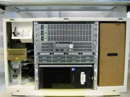
Illustration 2: ICOM Power LED
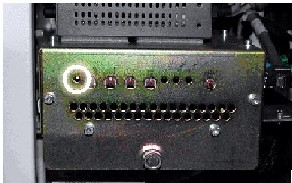
Illustration 3: Rear Console Bulkhead

Illustration 4: Attention Screen

Illustration 5: Power Switch

Illustration 6: Display Monitor Prompt Window
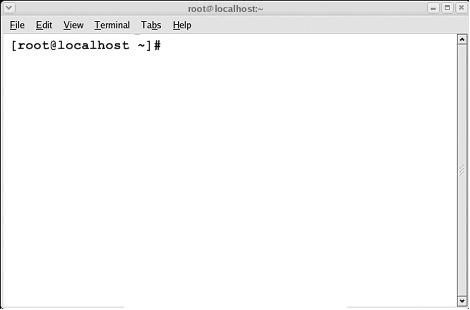
Illustration 7: Warning Box
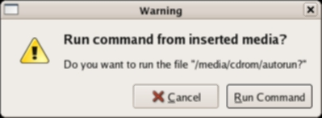
Illustration 8: CT Software Installation Window

Illustration 9: Install INFO Decision Box

Illustration 10: Install INFO Valid System State Box

Illustration 11: System Settings Screen
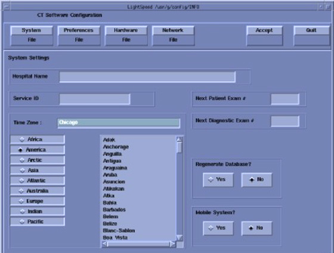
Illustration 12: Preferences Settings Screen

Illustration 13: Preferences Settings Screen (SP2)

Illustration 14: Main Hardware Screen
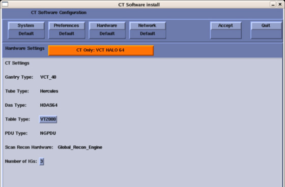
Illustration 15: Select Hardware Configuration.Screen
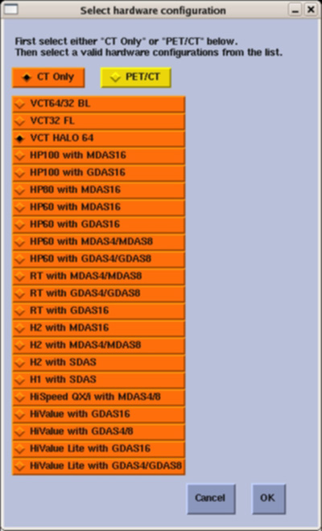
Illustration 16: Hardware Settings Screen

Illustration 17: Table Label/Rating Plate
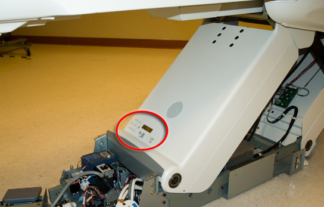
Illustration 18: Network Settings Screen

Illustration 19: Station Name - Network Settings Screen

Illustration 20: Install INFO Acceptance Window
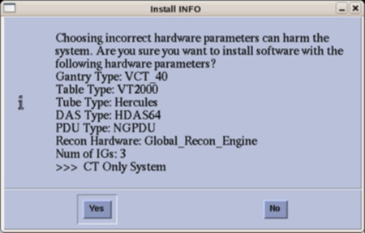
Illustration 21: Reboot Message Box

Illustration 22: Reboot Decision Box

Illustration 23: CT Software Auto- Start Disabled Box

Illustration 24: Attention Window
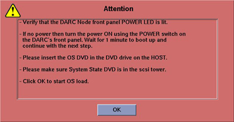
Illustration 25: SOL Service Error Box

Illustration 26: VDARC BIOS Attention Box

Illustration 27: DARC OS Load Information Box

Illustration 28: Example Software Options Screen
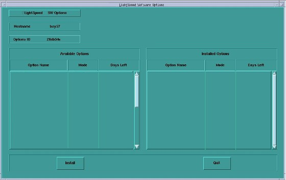
Illustration 29: Select Mechanism Box
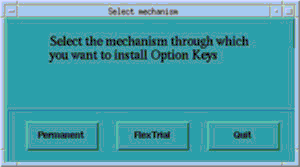
Illustration 30: Select Device Box

Illustration 31: Image Works Viewer

Illustration 32: User Preferences Screen

Illustration 33: Large Font Annotation Groups Screen

Illustration 34: Example Flash Download Screen
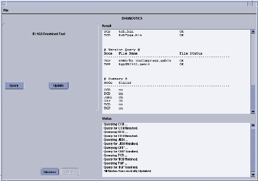
Illustration 35: Autovoice Settings Screen
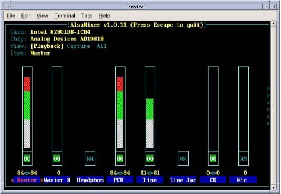
Illustration 36: Hydraulic Tilt Motor Speed Adjustment

Illustration 37: Service Switch Set to Service Mode
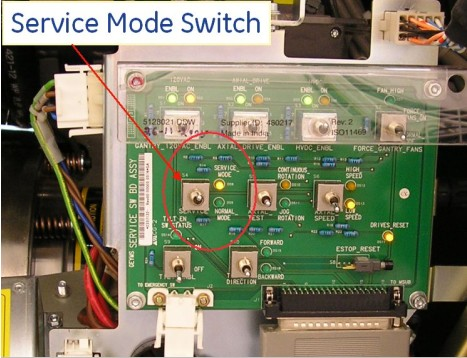
Illustration 38: Gantry Speed Display
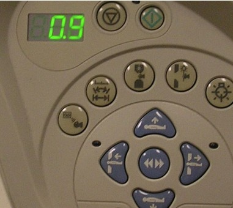
Illustration 39: System State Save/Restore Screen
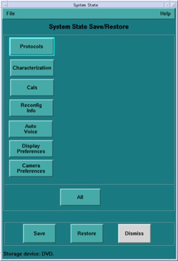
Illustration 40: Save System State Box

Illustration 41: Successful Completion Message
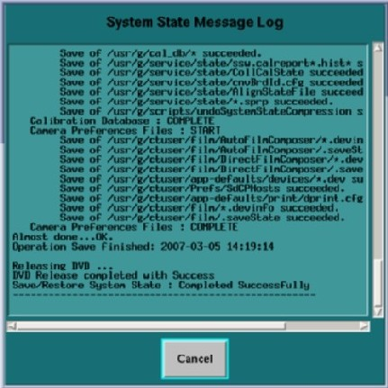
Illustration 42: Restore System State Box